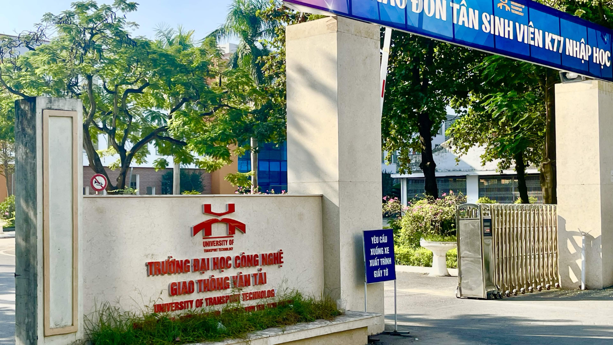
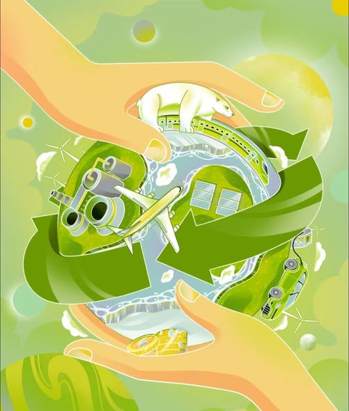
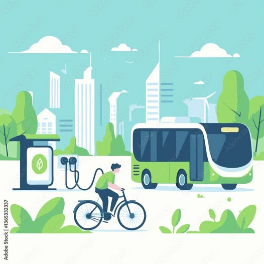

24h sống xanh của sinh viên UTT
Cùng khám phá một ngày của sinh viên UTT với những lựa chọn xanh giản dị: dùng bình cá nhân, tiết kiệm điện và giữ gìn không gian học tập.
Tìm bài viếtTrường Đại học Công nghệ Giao thông vận tải
Một khuôn viên xanh hơn không bắt đầu từ điều gì lớn lao — mà từ những lựa chọn nhỏ của mỗi sinh viên. Cùng Nhóm 35 lan tỏa điều đó mỗi ngày.
Dự án sinh viên UTxanh · Nhóm 35


Chúng mình là ai?
UTxanh là góc nhỏ của Nhóm 35, sinh viên Trường Đại học Công nghệ Giao thông vận tải, nơi chúng mình chia sẻ ý tưởng và hành động vì một môi trường học tập thân thiện, sạch đẹp hơn.
Không cần chờ đến ngày mai: mang bình nước cá nhân, phân loại rác đúng cách hay chăm sóc một góc cây xanh — mỗi việc nhỏ đều góp phần tạo nên thay đổi lớn.
Sống xanh từ giảng đường
Cùng biến những lựa chọn thân thiện với môi trường thành thói quen mỗi ngày ở trường.
Mang bình nước, hộp đựng cá nhân và ưu tiên đồ dùng có thể tái sử dụng.
Giữ gìn cây xanh, không xả rác và cùng chăm chút không gian học tập chung.
Đi bộ, đi xe đạp hoặc chọn phương tiện công cộng khi phù hợp với hành trình.
Góc chia sẻ
Những ý tưởng gần gũi để cùng nhau sống xanh hơn tại UTT.

Cùng khám phá một ngày của sinh viên UTT với những lựa chọn xanh giản dị: dùng bình cá nhân, tiết kiệm điện và giữ gìn không gian học tập.
Tìm bài viết
Mỗi hành động thân thiện với môi trường hôm nay đều góp phần tạo nên một tương lai xanh hơn. Bắt đầu từ những thay đổi nhỏ và cùng lan tỏa nhé!
Tìm bài viết
Đi bộ, đạp xe hoặc chọn phương tiện công cộng khi phù hợp để giảm tác động đến môi trường. Mỗi chuyến đi xanh đều tạo nên khác biệt.
Tìm bài viếtTái chế thành điều hay
Khám phá những ý tưởng làm đồ hữu ích từ vật liệu quen thuộc. Nhấn vào từng mục để xem bài viết.
Xem & lan tỏa
Cùng xem những câu chuyện xanh và hoạt động của sinh viên UTT.
Chuyện xanh quanh ta
Chia sẻ UTxanh
Tạo mã QR dẫn đến website UTxanh để bạn bè quét và truy cập nhanh.